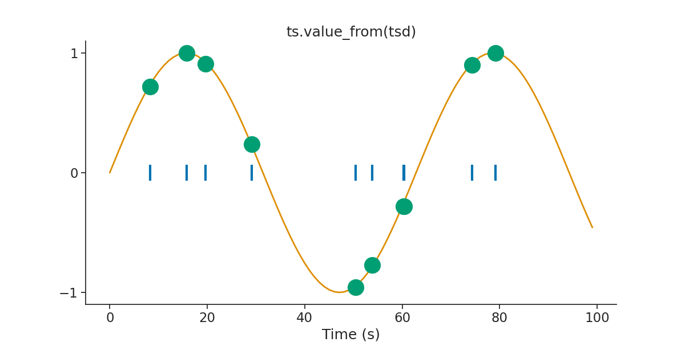

Note
Click here to download the full example code
Core Tutorial
This script will introduce the basics of handling time series data with pynapple.
Warning
This tutorial uses seaborn and matplotlib for displaying the figure.
You can install both with pip install matplotlib seaborn
import numpy as np
import matplotlib.pyplot as plt
import pynapple as nap
import pandas as pd
import seaborn as sns
custom_params = {"axes.spines.right": False, "axes.spines.top": False}
sns.set_theme(style="ticks", palette="colorblind", font_scale=1.5, rc=custom_params)
Time series object
Let's create a Tsd object with artificial data. In this example, every time point is 1 second apart.
Out:
Time (s)
---------- --------
0.0 0.760408
1.0 0.889751
2.0 0.629696
3.0 0.67643
...
96.0 0.005879
97.0 0.698919
98.0 0.390284
99.0 0.651895
dtype: float64, shape: (100,)
It is possible to toggle between seconds, milliseconds and microseconds. Note that when using as_units, the returned object is a simple pandas series.
Out:
Time (ms)
0.0 0.760408
1000.0 0.889751
2000.0 0.629696
3000.0 0.676430
4000.0 0.244106
...
95000.0 0.164469
96000.0 0.005879
97000.0 0.698919
98000.0 0.390284
99000.0 0.651895
Length: 100, dtype: float64
Time (us)
0 0.760408
1000000 0.889751
2000000 0.629696
3000000 0.676430
4000000 0.244106
...
95000000 0.164469
96000000 0.005879
97000000 0.698919
98000000 0.390284
99000000 0.651895
Length: 100, dtype: float64
Pynapple is able to handle data that only contains timestamps, such as an object containing only spike times. To do so, we construct a Ts object which holds only times. In this case, we generate 10 random spike times between 0 and 100 ms.
Out:
Time (s)
0.009502055
0.02875572
0.029115683
0.040307416
...
0.052632317
0.054077226
0.057565598
0.07302107
shape: 10
If the time series contains multiple columns, we use a TsdFrame.
tsdframe = nap.TsdFrame(
t=np.arange(100), d=np.random.rand(100, 3), time_units="s", columns=["a", "b", "c"]
)
print(tsdframe)
Out:
Time (s) a b c
---------- ------- ------- -------
0.0 0.15749 0.85926 0.94115
1.0 0.37227 0.51858 0.66974
2.0 0.04468 0.08837 0.54075
3.0 0.27933 0.38578 0.98672
...
96.0 0.67597 0.70324 0.23174
97.0 0.58221 0.26988 0.5022
98.0 0.59746 0.86237 0.2965
99.0 0.68977 0.91524 0.94555
dtype: float64, shape: (100, 3)
And if the number of dimension is even larger, we can use the TsdTensor (typically movies).
Out:
Time (s)
---------- -----------------------------
0.0 [[0.426242 ... 0.060348] ...]
1.0 [[0.422371 ... 0.64646 ] ...]
2.0 [[0.100666 ... 0.423382] ...]
3.0 [[0.573266 ... 0.725885] ...]
...
96.0 [[0.108637 ... 0.686735] ...]
97.0 [[0.306981 ... 0.590216] ...]
98.0 [[0.908881 ... 0.760917] ...]
99.0 [[0.414883 ... 0.804008] ...]
dtype: float64, shape: (100, 3, 4)
Interval Sets object
The IntervalSet object stores multiple epochs with a common time unit. It can then be used to restrict time series to this particular set of epochs.
epochs = nap.IntervalSet(start=[0, 10], end=[5, 15], time_units="s")
new_tsd = tsd.restrict(epochs)
print(epochs)
print("\n")
print(new_tsd)
Out:
start end
0 0 5
1 10 15
shape: (2, 2), time unit: sec.
Time (s)
---------- --------
0.0 0.760408
1.0 0.889751
2.0 0.629696
3.0 0.67643
...
12.0 0.552274
13.0 0.57937
14.0 0.314971
15.0 0.473802
dtype: float64, shape: (12,)
Multiple operations are available for IntervalSet. For example, IntervalSet can be merged. See the full documentation of the class here for a list of all the functions that can be used to manipulate IntervalSets.
epoch1 = nap.IntervalSet(start=0, end=10) # no time units passed. Default is us.
epoch2 = nap.IntervalSet(start=[5, 30], end=[20, 45])
epoch = epoch1.union(epoch2)
print(epoch1, "\n")
print(epoch2, "\n")
print(epoch)
Out:
start end
0 0 10
shape: (1, 2), time unit: sec.
start end
0 5 20
1 30 45
shape: (2, 2), time unit: sec.
start end
0 0 20
1 30 45
shape: (2, 2), time unit: sec.
TsGroup object
Multiple time series with different time stamps (.i.e. a group of neurons with different spike times from one session) can be grouped with the TsGroup object. The TsGroup behaves like a dictionary but it is also possible to slice with a list of indexes
my_ts = {
0: nap.Ts(
t=np.sort(np.random.uniform(0, 100, 1000)), time_units="s"
), # here a simple dictionary
1: nap.Ts(t=np.sort(np.random.uniform(0, 100, 2000)), time_units="s"),
2: nap.Ts(t=np.sort(np.random.uniform(0, 100, 3000)), time_units="s"),
}
tsgroup = nap.TsGroup(my_ts)
print(tsgroup, "\n")
Out:
Dictionary like indexing returns directly the Ts object
Out:
Time (s)
0.170092028
0.205122608
0.313135472
0.317718414
...
99.484118422
99.58165218
99.793852698
99.985022542
shape: 1000
List like indexing
Out:
Operations such as restrict can thus be directly applied to the TsGroup as well as other operations.
newtsgroup = tsgroup.restrict(epochs)
count = tsgroup.count(
1, epochs, time_units="s"
) # Here counting the elements within bins of 1 seconds
print(count)
Out:
Time (s) 0 1 2
---------- --- --- ---
0.5 9 20 29
1.5 11 29 26
2.5 12 15 35
3.5 12 19 35
...
11.5 9 20 35
12.5 8 25 29
13.5 8 19 21
14.5 13 23 28
dtype: float64, shape: (10, 3)
One advantage of grouping time series is that metainformation can be added directly on an element-wise basis. In this case, we add labels to each Ts object when instantiating the group and after. We can then use this label to split the group. See the TsGroup documentation for a complete methodology for splitting TsGroup objects.
First we create a pandas Series for the label.
Out:
We can pass label1 at the initialization step.
Out:
Notice how the label has been added as one column when printing tsgroup.
We can also add a label for each items in 2 different ways after initializing the TsGroup object.
First with set_info :
Out:
Index rate my_label1 my_label2
------- ------- ----------- -----------
0 10.0058 0 a
1 20.0116 1 a
2 30.0173 0 b
Notice that you can pass directly a numpy array as long as it is the same size as the TsGroup.
We can also add new metadata by passing it as an item of the dictionary with a string key.
Out:
Index rate my_label1 my_label2 my_label3
------- ------- ----------- ----------- -----------
0 10.0058 0 a -0.70233
1 20.0116 1 a -1.50974
2 30.0173 0 b -0.79448
Metadata columns can be viewed as attributes of TsGroup.
Out:
or with the get_info method.
Out:
Finally you can use the metadata to slice through the TsGroup object.
There are multiple methods for it. You can use the TsGroup getter functions :
-
getby_category(col_name): categorized the metadata column and return aTsGroupfor each category. -
getby_threshold(col_name, value): threshold the metadata column and return a singleTsGroup. -
getby_intervals(col_name, bins): digitize the metadata column and return aTsGroupfor each bin.
In this example we categorized tsgroup with my_label2.
dict_of_tsgroup = tsgroup.getby_category("my_label2")
print(dict_of_tsgroup["a"], "\n")
print(dict_of_tsgroup["b"])
Out:
Index rate my_label1 my_label2 my_label3
------- ------- ----------- ----------- -----------
0 10.0058 0 a -0.70233
1 20.0116 1 a -1.50974
Index rate my_label1 my_label2 my_label3
------- ------- ----------- ----------- -----------
2 30.0173 0 b -0.79448
Notice that getby_threshold return directly a TsGroup.
Out:
Index rate my_label1 my_label2 my_label3
------- ------- ----------- ----------- -----------
1 20.0116 1 a -1.50974
Similar operations can be performed using directly the attributes of TsGroup.
For example, the previous line is equivalent to :
Out:
Index rate my_label1 my_label2 my_label3
------- ------- ----------- ----------- -----------
1 20.0116 1 a -1.50974
You can also chain queries with attributes.
Out:
Index rate my_label1 my_label2 my_label3
------- ------- ----------- ----------- -----------
0 10.0058 0 a -0.70233
Time support
A key feature of how pynapple manipulates time series is an inherent time support object defined for Ts, Tsd, TsdFrame and TsGroup objects. The time support object is defined as an IntervalSet that provides the time serie with a context. For example, the restrict operation will automatically update the time support object for the new time series. Ideally, the time support object should be defined for all time series when instantiating them. If no time series is given, the time support is inferred from the start and end of the time series.
In this example, a TsGroup is instantiated with and without a time support. Notice how the frequency of each Ts element is changed when the time support is defined explicitly.
time_support = nap.IntervalSet(start=0, end=200, time_units="s")
my_ts = {
0: nap.Ts(
t=np.sort(np.random.uniform(0, 100, 10)), time_units="s"
), # here a simple dictionary
1: nap.Ts(t=np.sort(np.random.uniform(0, 100, 20)), time_units="s"),
2: nap.Ts(t=np.sort(np.random.uniform(0, 100, 30)), time_units="s"),
}
tsgroup = nap.TsGroup(my_ts)
tsgroup_with_time_support = nap.TsGroup(my_ts, time_support=time_support)
Out:
Out:
acceding the time support is an important feature of pynapple
Out:
We can use value_from which as it indicates assign to every timestamps the closed value in time from another time series. Let's define the time series we want to assign values from.
tsd_sin = nap.Tsd(t=np.arange(0, 100, 1), d=np.sin(np.arange(0, 10, 0.1)))
tsgroup_sin = tsgroup.value_from(tsd_sin)
plt.figure(figsize=(12, 6))
plt.plot(tsgroup[0].fillna(0), "|", markersize=20, mew=3)
plt.plot(tsd_sin, linewidth=2)
plt.plot(tsgroup_sin[0], "o", markersize=20)
plt.title("ts.value_from(tsd)")
plt.xlabel("Time (s)")
plt.yticks([-1, 0, 1])
plt.show()

Out:
/mnt/home/gviejo/pynapple/docs/api_guide/tutorial_pynapple_core.py:261: UserWarning: FigureCanvasAgg is non-interactive, and thus cannot be shown
plt.show()
Total running time of the script: ( 0 minutes 10.426 seconds)
Download Python source code: tutorial_pynapple_core.py